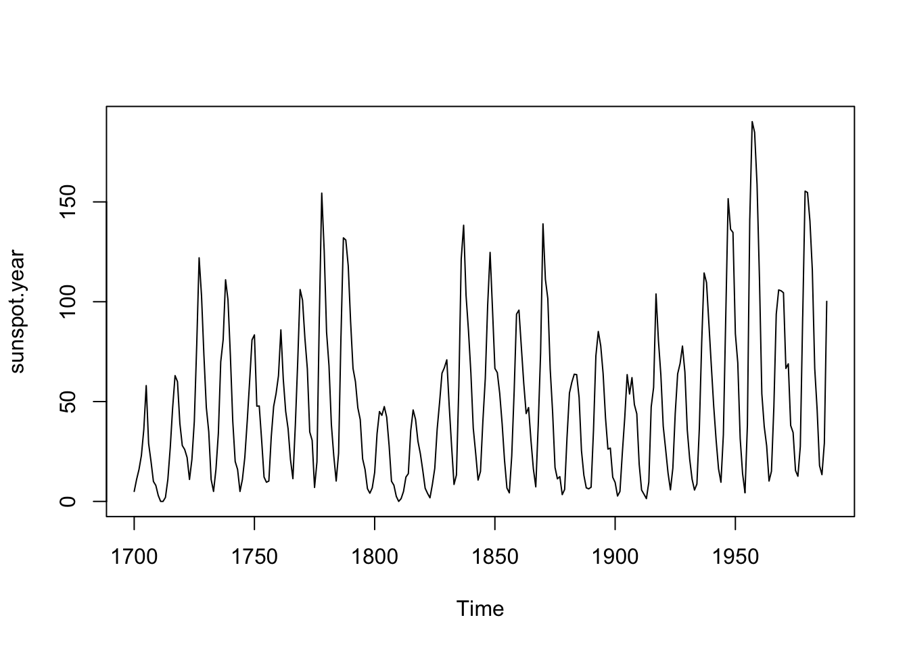
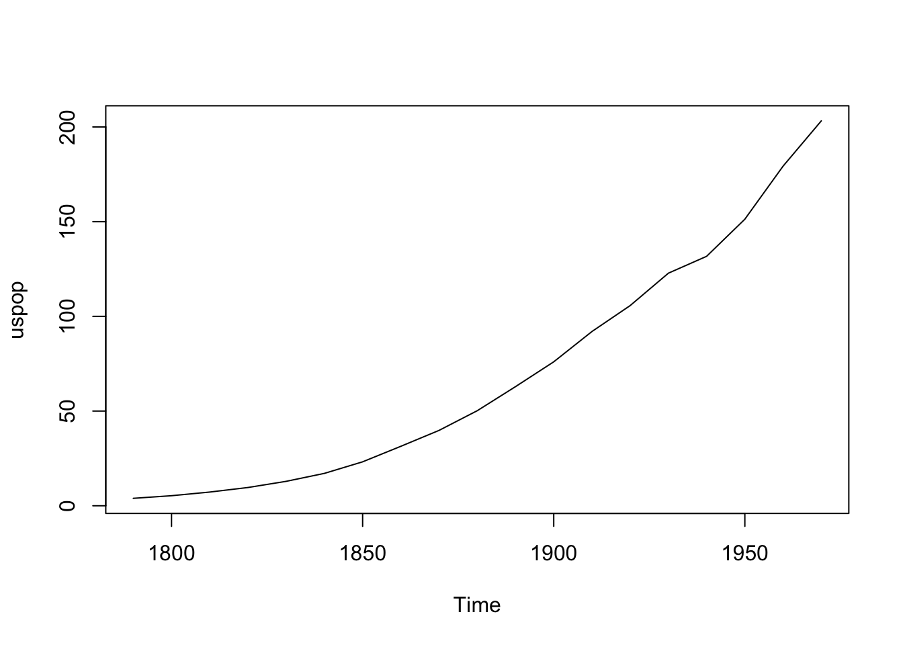

flowchart LR
A[Hard edge] --> B(Round edge)
B --> C{Decision}
C --> D[Result one]
C --> E[Result two]
Knitr is a package that takes care of the middle step between evaluating code and producing pdf/html. The package runs your code and places its output into a final markdown file, which is later converted by pandoc.
Knitr lets you sen cell options that influence code blocks’ execution and output. They are put at the top of a block within comments. For example:
plot(sunspot.year)
plot(uspop)

There is large number of options, but I will show the most commonly used ones. To begin in Figure 7.1, label is a unique id for a code cell, which can be referred to in text with @fig-plots. Similarly, you can refer to tables, chapter, and files. fig-cap defines a caption for the entire plot. fig-subcap gives the two plots their individual sub-captions. layout-ncol let’s us display our plots, pictures, etc. in separate columns. And plot() makes the plots. If you would like your code to fold use code-fold = true, above option show was used to have it opened by default. code-summary defines text for collapsed code blocks.
Another common options to use within code blocks are:
| Option | Value | Explanation |
|---|---|---|
| eval | true | Whether to evaluate the code and include its results |
| echo | true | Whether to display code along with its results |
| warning | true | Whether to display warnings |
| error | false | Whether to display errors |
| message | true | Whether to display messages |
| include | true | Prevents any output (code, results) from being included |
| tidy | false | Whether to reformat code in a tidy way when displaying it |
| results | “markup” | Type of output format: “markup”, “asis”, “hold”, or “hide” |
| cache | false | Whether to cache results for future renders |
tidy: true is super useful once you want to include code inside your document as it will format it nicely.
If you are familiar with HTML you will recognize <div> blocks. You can add div blocks with wrapping text in ::: or more semicolons. It is useful when you want put pictures in a grid. Here is a simple example:
::: {layout-ncol="2"}


:::It must be separated from the preceding and following blocks by blank lines. Divs can be nested inside other Divs. For example, here we put a note and some text onto the margin.
:::: column-margin
::: callout-note
Here is a Note!
:::
More content.
::::Here is a Note!
More content.
The short code enables you to insert a native page break into a document that will be compatible with all the other formats:
Because R, YAML, HTML, LaTeX have different notations for commenting. So, the one that will work universally within quarto is HTML’s <!-- comment here -->.
You can also create beautiful UML (Unified Modeling Language) diagrams within quarto with Mermaid and Graphviz. The flow chart below was maid with Mermaid!
flowchart LR
A[Hard edge] --> B(Round edge)
B --> C{Decision}
C --> D[Result one]
C --> E[Result two]
This might be your first time hearing that there is a language behind diagrams. UML is a standard graphical notation to describe software designs. It is a powerful tools for planning, visualizing and documents your projects. There are different types of diagrams to depict structures, behaviors and interactions with the standard set of symbols and notation. We will meet some of them in the chapter on Relational Databases.
“Proper citation adds credibility to your work and acknowledges the work of others.” - Chat GPT
Adding citations to your work shouldn’t be stressful or confusing. With Quarto’s seamless integration with Zotero, you can easily add citations in your preferred style and create a reference list, all without hassle. How cool is that? I think pretty cool.
Quarto utilizes Pandoc to generate citations and bibliographies in your preferred style. To source your citations, you’ll need a .bib or .bibtex file, and optionally a .csl file for the citation style. Simply, add bibliography: references.bib to you YAML header in _quarto.yml.
bibliography: references.bibYou can easily cite your article using @yourcitation9999. Visual mode also provides suggestions, and entering the article’s DOI will help locate and insert it even if it is not in your bibliography. For more information on citation methods, see Quarto Citation and Pandoc Citations.
| Markdown Format | Output (author-date format) |
|---|---|
| @abadie2017 says cluster you SE. | Abadie et al. (2017) says cluster you SE. |
| Some thing smart [@abadie2017; @bai2009]. | Some thing smart (Abadie et al. 2017; Bai 2009). |
| Abadie says cluster [-@abadie2017]. | Abadie says cluster (2017). |
If you’ve successfully created your bibliography in Zotero, adding citations to your document will be a breeze. Simply start typing and Zotero will suggest citations to add to your bibliography file. For a paper with more than 10 citations, I recommend using Better Bibtex, which allows you to connect citation keys to the paper as you write, just make sure Zotero is open.
To generate your citations from a document (say cited in Obsidian) without having to re-cite everything, you can use the bbt_update_bib() function from the rbbt package. Ensure that Zotero is running and that you’re in the markdown document where you want to update citations. Run the bbt_update_bib() function to create a bibliography, and specify any additional arguments as needed.
bbt_update_bib(
path_rmd, # Path to your Markdown document.
path_bib = bbt_guess_bib_file(path_rmd), # Path to the references.bib file
translator = bbt_guess_translator(path_bib), # type of bibliography file to generate: CSL-JSON, BibLaTeX, BibTeX, and CSL YAML.
)